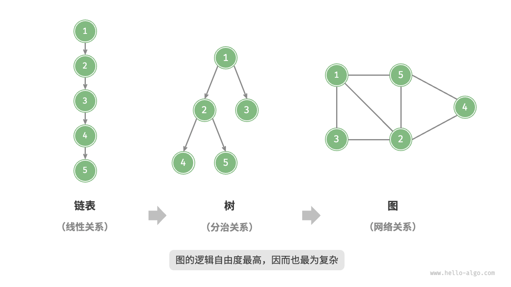

图
「图 graph」是一种非线性数据结构，由「顶点 vertex」和「边 edge」组成。我们可以将图 $G$ 抽象地表示为一组顶点 $V$ 和一组边 $E$ 的集合。以下示例展示了一个包含 5 个顶点和 7 条边的图。
$$ \begin{aligned} V & = { 1, 2, 3, 4, 5 } \newline E & = { (1,2), (1,3), (1,5), (2,3), (2,4), (2,5), (4,5) } \newline G & = { V, E } \newline \end{aligned}
$$
如果将顶点看作节点，将边看作连接各个节点的引用（指针），我们就可以将图看作一种从链表拓展而来的数据结构。如下图所示，相较于线性关系（链表）和分治关系（树），网络关系（图）的自由度更高，因而更为复杂。

图常见类型与术语
根据边是否具有方向，可分为「无向图 undirected graph」和「有向图 directed graph」，如下图所示。
- 在无向图中，边表示两顶点之间的“双向”连接关系，例如微信或 QQ 中的“好友关系”。
- 在有向图中，边具有方向性，即 $A \rightarrow B$ 和 $A \leftarrow B$ 两个方向的边是相互独立的，例如微博或抖音上的“关注”与“被关注”关系。

根据所有顶点是否连通，可分为「连通图 connected graph」和「非连通图 disconnected graph」，如下图所示。
- 对于连通图，从某个顶点出发，可以到达其余任意顶点。
- 对于非连通图，从某个顶点出发，至少有一个顶点无法到达。

我们还可以为边添加“权重”变量，从而得到如下图所示的「有权图 weighted graph」。例如在《王者荣耀》等手游中，系统会根据共同游戏时间来计算玩家之间的“亲密度”，这种亲密度网络就可以用有权图来表示。

图数据结构包含以下常用术语。
- 「邻接 adjacency」：当两顶点之间存在边相连时，称这两顶点“邻接”。在上图中，顶点 1 的邻接顶点为顶点 2、3、5。
- 「路径 path」：从顶点 A 到顶点 B 经过的边构成的序列被称为从 A 到 B 的“路径”。在上图中，边序列 1-5-2-4 是顶点 1 到顶点 4 的一条路径。
- 「度 degree」：一个顶点拥有的边数。对于有向图，「入度 in-degree」表示有多少条边指向该顶点，「出度 out-degree」表示有多少条边从该顶点指出。
图的表示
图的常用表示方式包括“邻接矩阵”和“邻接表”。以下使用无向图进行举例。
邻接矩阵
设图的顶点数量为 $n$ ，「邻接矩阵 adjacency matrix」使用一个 $n \times n$ 大小的矩阵来表示图，每一行（列）代表一个顶点，矩阵元素代表边，用 $1$ 或 $0$ 表示两个顶点之间是否存在边。
如下图所示，设邻接矩阵为 $M$、顶点列表为 $V$ ，那么矩阵元素 $M[i, j] = 1$ 表示顶点 $V[i]$ 到顶点 $V[j]$ 之间存在边，反之 $M[i, j] = 0$ 表示两顶点之间无边。

邻接矩阵具有以下特性。
- 顶点不能与自身相连，因此邻接矩阵主对角线元素没有意义。
- 对于无向图，两个方向的边等价，此时邻接矩阵关于主对角线对称。
- 将邻接矩阵的元素从 $1$ 和 $0$ 替换为权重，则可表示有权图。
使用邻接矩阵表示图时，我们可以直接访问矩阵元素以获取边，因此增删查改操作的效率很高，时间复杂度均为 $O(1)$ 。然而，矩阵的空间复杂度为 $O(n^2)$ ，内存占用较多。
邻接表
「邻接表 adjacency list」使用 $n$ 个链表来表示图，链表节点表示顶点。第 $i$ 个链表对应顶点 $i$ ，其中存储了该顶点的所有邻接顶点（与该顶点相连的顶点）。下图展示了一个使用邻接表存储的图的示例。

邻接表仅存储实际存在的边，而边的总数通常远小于 $n^2$ ，因此它更加节省空间。然而，在邻接表中需要通过遍历链表来查找边，因此其时间效率不如邻接矩阵。
观察上图，邻接表结构与哈希表中的“链式地址”非常相似，因此我们也可以采用类似的方法来优化效率。比如当链表较长时，可以将链表转化为 AVL 树或红黑树，从而将时间效率从 $O(n)$ 优化至 $O(\log n)$ ；还可以把链表转换为哈希表，从而将时间复杂度降至 $O(1)$ 。
图的常见应用
如下表所示，许多现实系统可以用图来建模，相应的问题也可以约化为图计算问题。
表
| 顶点 | 边 | 图计算问题 | |
|---|---|---|---|
| 社交网络 | 用户 | 好友关系 | 潜在好友推荐 |
| 地铁线路 | 站点 | 站点间的连通性 | 最短路线推荐 |
| 太阳系 | 星体 | 星体间的万有引力作用 | 行星轨道计算 |